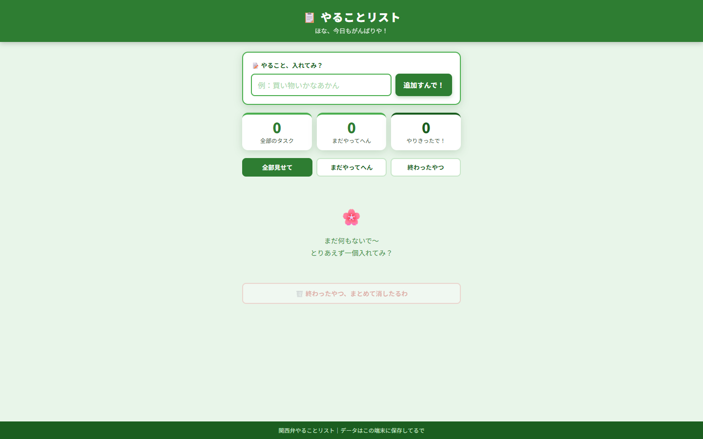
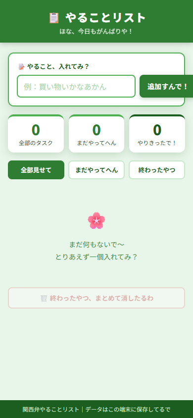
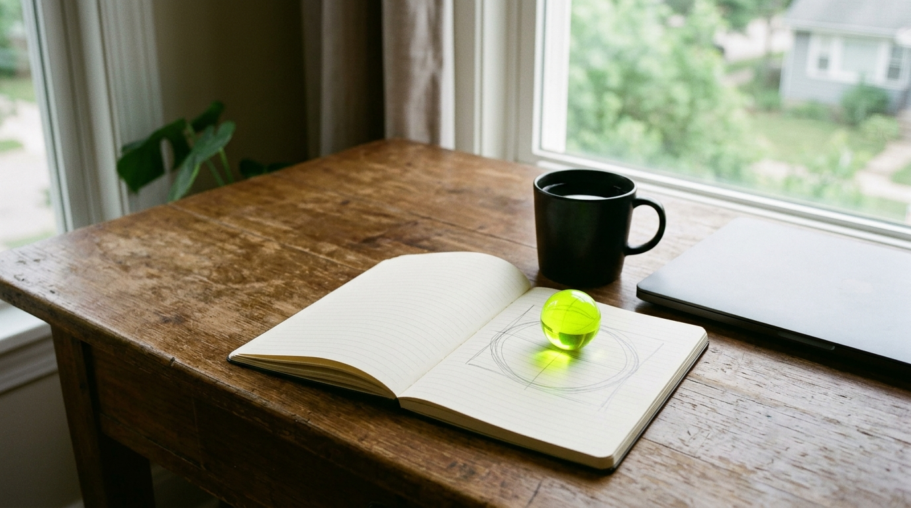
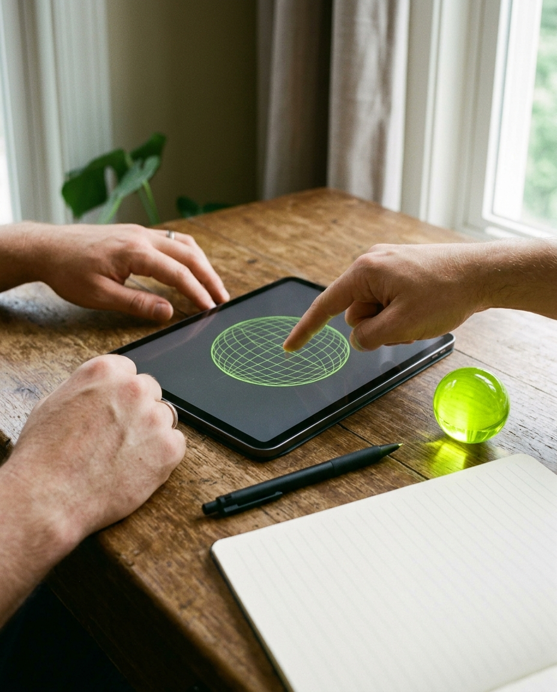
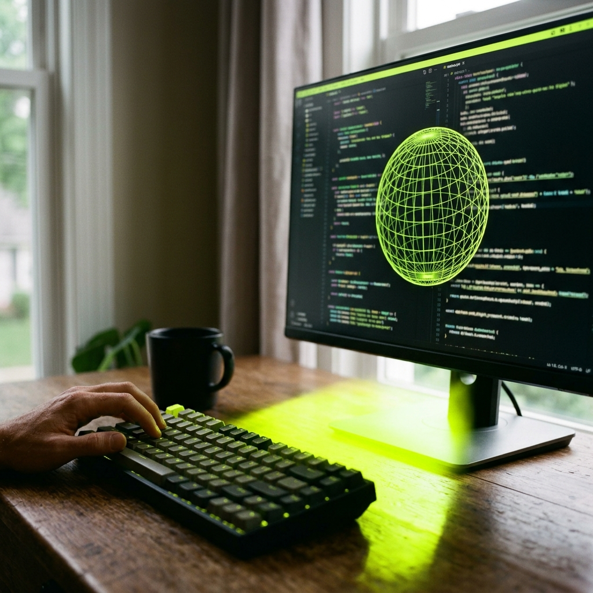
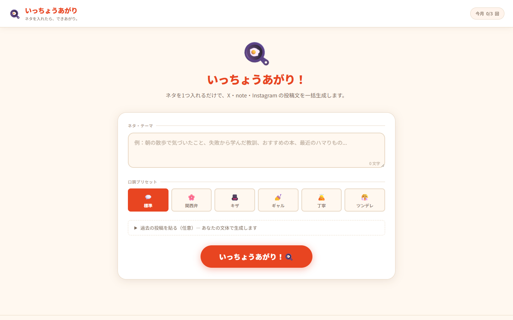
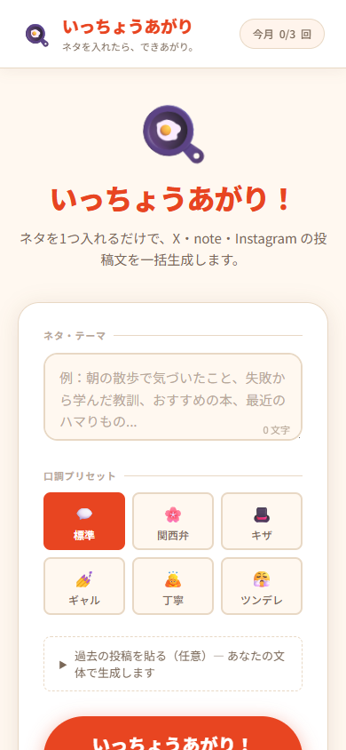
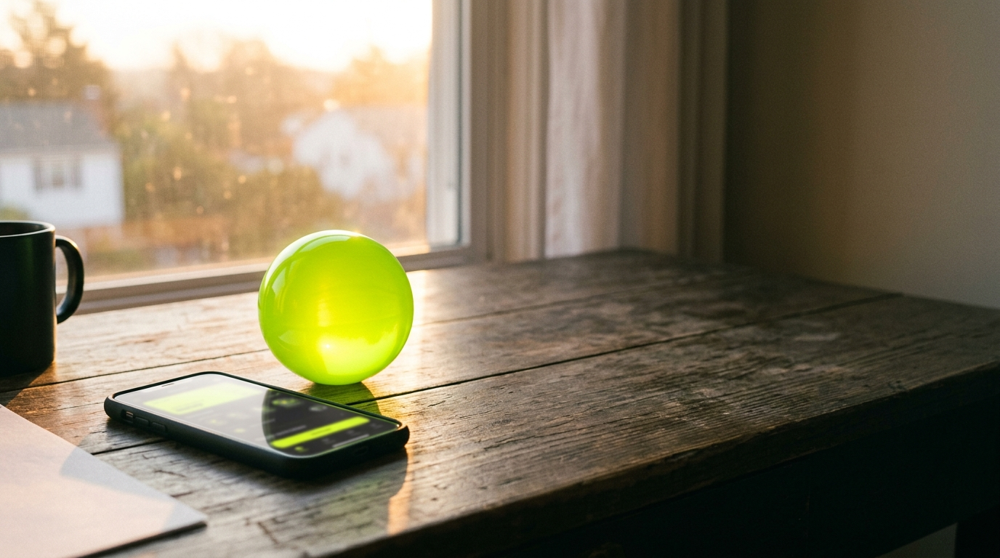

作りたいもの・目的・納期・予算をお聞きします。まずはざっくりご相談ください。
01
ToDoアプリ・業務ツール・社内ダッシュボードなど。要件ヒアリングから設計・実装・デプロイまで一括対応。
¥50,000〜/ 1案件
02
サービス紹介・集客・採用など目的に合わせたLPを制作。レスポンシブ対応・SEO基礎設定込み。
¥15,000〜/ 初回限定通常 ¥30,000〜
03
スプレッドシート連携・Slack通知・PDF生成など「今ある作業をラクにしたい」を実現するツール開発。
¥30,000〜/ 1件
04
既存サービスへのChatGPT・Claude連携、文章生成・要約・分類など、AI APIを使った機能追加。
¥40,000〜/ 1機能

内容をもとに金額・納期・対応範囲を提示します。納得いただけたらご依頼確定です。
LP（1ページ）初回限定デザイン・コーディング・レスポンシブ対応
シンプルWebアプリ要件定義・設計・実装・デプロイ
業務ツール・自動化要件ヒアリング・実装・使い方説明
AI機能追加API連携・プロンプト設計・実装

着手後、途中経過を随時共有。フィードバックを反映しながら進めます。
アイデアが固まったその日にデプロイまで完走。「まず動くものを見たい」に応えます。制作実績の「いっちょうあがり」はコンセプト設計からVercel公開まで1日で完結。
「予算は限られてる」「技術的なことは任せたい」「でも完成イメージは伝えにくい」——その感覚を持って制作します。一人で動いているからこそ、一人の相談に向き合えます。
「ディレクターと開発者で話が噛み合わない」が起きません。あなたの言葉を直接コードに変換するので、認識のズレが最小限です。
Claude・ChatGPT等のAPIを実務で使い続けています。「AIを組み込みたいけど何から始めれば」という相談も歓迎。機能追加から設計まで対応します。




Webアプリ
ネタを1つ入力するだけでX・note・Instagram用の投稿文を口調付きで一括生成するアプリ。Claude API + Stripe決済（¥980/月）をHTML/JS単体で実装。コンセプト設計からデプロイまで1日で完走。
あなたのプロジェクトが次の実績になるかもしれません。
相談してみる
最終確認後、ファイルまたはデプロイ済みURLで納品。軽微な修正は納品後1週間以内無料。
はい、まったく問題ありません。「こういうものが欲しい」というイメージだけ教えてください。技術的な要件整理からお手伝いします。
納品後1週間以内の軽微な修正（テキスト変更・色調整など）は無料で対応します。仕様変更や機能追加については別途お見積もりします。
内容によっては最短1日での対応も可能です。まずご相談ください。スケジュールが空いていれば特急対応します（別途特急料金はいただきません）。
HTML/CSS/JavaScript・React・Next.jsを中心に、要件に合わせて選定します。バックエンドはFirebase・Supabase・Node.jsなど。AIはOpenAI・Anthropic APIに対応しています。
納品後1週間の無償サポートに加え、継続的な保守・改善についても対応しています。まずはご相談ください。